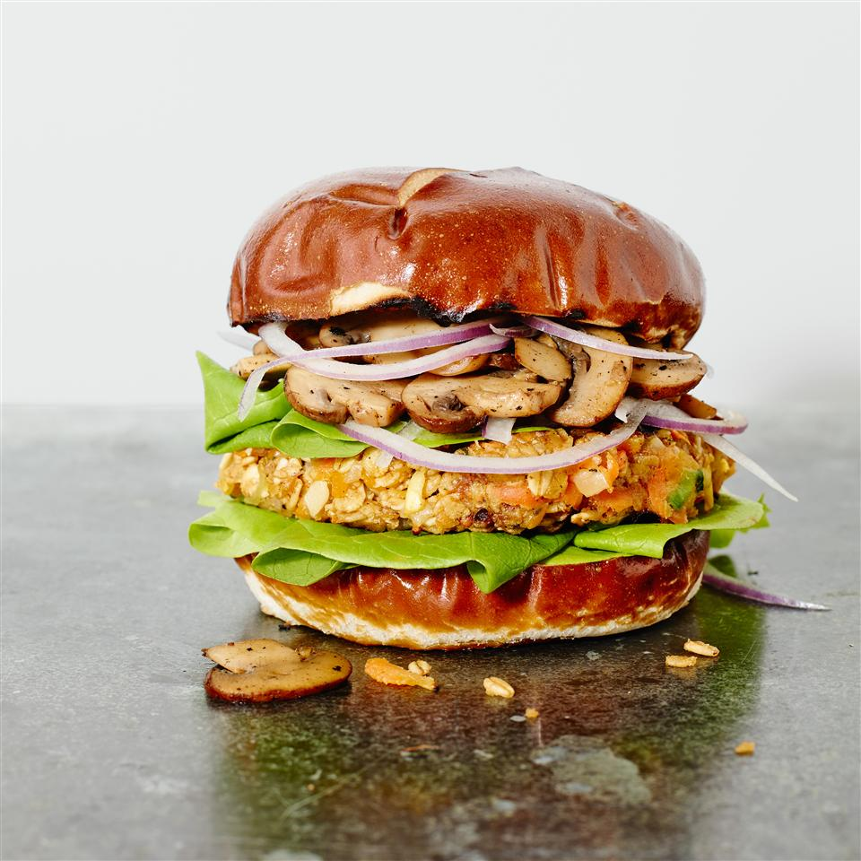

Veggie Burgers
(Feeds 8)

Description
A delicious vegetarian burger recipe for the summer months.
This patty is made out of summer squash, zucchini, rolled oats, carrots, baby portobello mushrooms
and flavorful spices.
If you're in the mood for some southern, vegetarian comfort food, try this burger out!
Ingredients
- 2 teaspoons olive oil
- 1 small onion, grated
- 2 cloves crushed garlic
- 2 carrots, shredded
- 1 small summer squash, shredded
- 1 small zucchini, shredded
- 20 baby portobello mushrooms, sliced
- 1 1/2 cups rolled oats
- 1/4 cup shredded cheddar cheese
- 1 egg, beaten
- 1 tablespoon soy sauce
- 1 1/2 cups all-purpose flour
Steps
- Heat the olive oil in a skillet over low heat, and cook the onion and garlic for about 5 minutes,
until tender. Mix in the carrots, squash, and zucchini. Continue to cook and stir for 2 minutes.
Remove pan from heat, and mix in oats, cheese, and egg. Stir in soy sauce, transfer the mixture
to a bowl, and refrigerate 1 hour.
- Preheat the grill for high heat.
- Place the flour on a large plate. Form the vegetable mixture into eight 3 inch round patties.
Drop each patty into the flour, lightly coating both sides.
- Oil the grill grate, and grill patties 5 minutes on each side,
or until heated through and nicely browned.